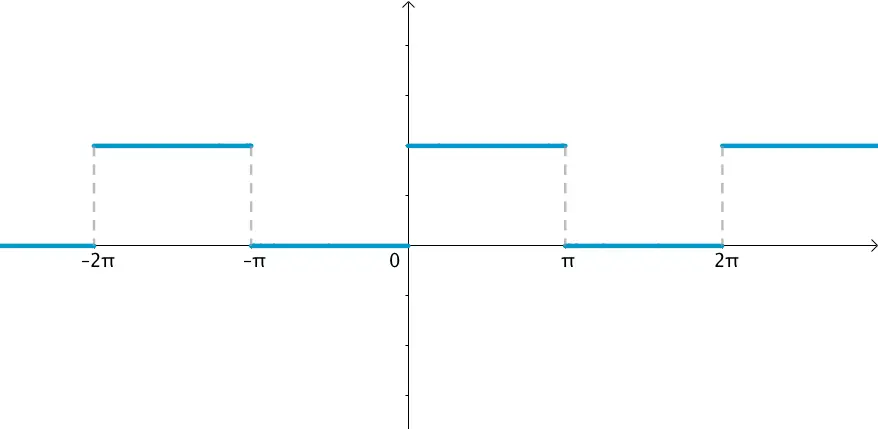
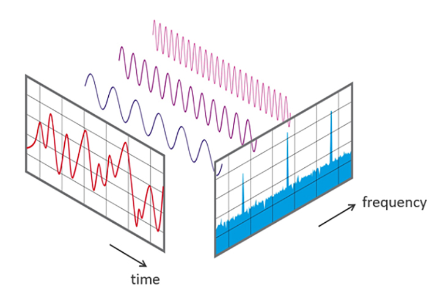
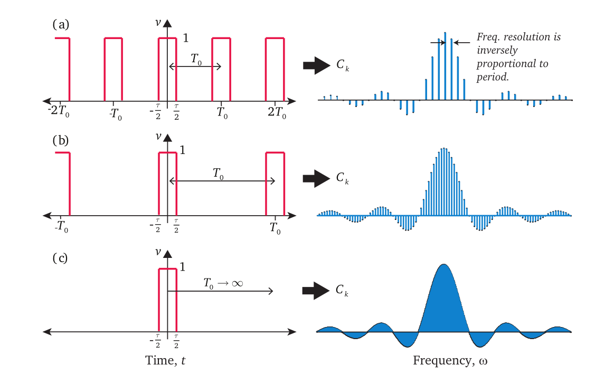
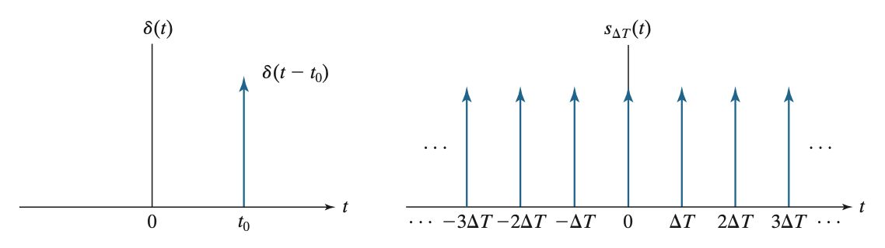
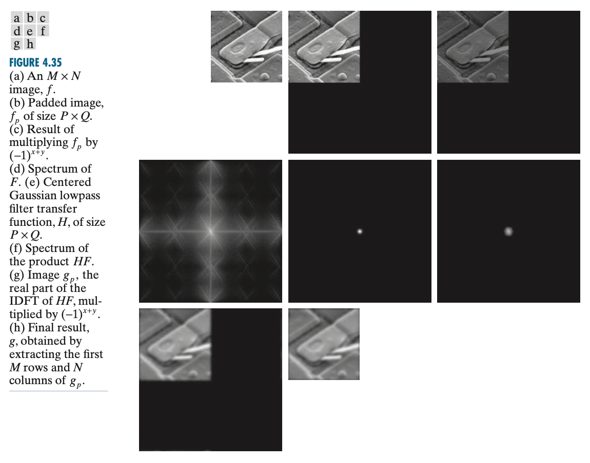

Fourier Transform
\[ \newcommand{\coloneqq}{\mathrel{\mathrel{\vcenter{:}}=}} \]
内积空间与正交基
我们知道，在一个 \(n\) 维线性空间中可以找到 \(n\) 个线性无关的向量，构成该空间的一组基。任一空间中的向量都可以唯一表示为该基的线性组合。如果在线性空间中定义内积运算，就得到内积空间（实数域上称为欧氏空间，复数域上称为酉空间），内积为零的向量称为正交。如果一组基两两正交，那么这组基称作正交基。
值得注意的是，上述“线性空间”、“向量”、“内积”都是抽象的概念，不一定是 \(\mathbb R^n\) 或 \(\mathbb C^n\). 只要定义的加法和数乘运算满足相应的性质，那么就是一个线性空间；只要定义的内积运算满足相应的性质，那么就是一个内积空间。因此，若将上述抽象的“向量”具体化为区间 \([a,b]\) 上的函数，并定义两个函数的内积为： \[ \langle f(x),g(x)\rangle=\int_a^bf(x)\bar g(x)\mathrm dx \] 那么这可以是一个合法的内积空间。
设定义在 \(D\) 上的正交函数系 \(\{\varphi_n(x)\mid n\in\mathbb N\}\) 构成函数空间的一个正交基，那么任意 \(D\) 上的函数 \(f(x)\) 都可以表示为该基的线性组合： \[ f(x)=\sum_{n}c_n\varphi_n(x) \] 为了求解系数 \(c_n\)，考虑 \(f(x)\) 与 \(\varphi_n(x)\) 的内积： \[ \langle f(x),\varphi_n(x)\rangle=\sum_ic_i\langle\varphi_i(x),\varphi_n(x)\rangle=c_n\langle\varphi_n(x),\varphi_n(x)\rangle \]
于是： \[ c_n=\frac{\langle f(x),\varphi_n(x)\rangle}{\langle\varphi_n(x),\varphi_n(x)\rangle} \] 而傅里叶级数就是取这个正交基为三角函数系的特殊情况。
傅立叶级数
以 \(2\pi\) 为周期的周期函数
在区间 \([-\pi,\pi]\) 上，利用积化和差公式可以证明，如下的三角函数系两两正交： \[ \{1,\cos x,\sin x,\cos 2x,\sin 2x,\ldots,\cos nx,\sin nx,\ldots\}\tag{1}\label{basis1} \] 于是根据第一节的内容，\([-\pi,\pi]\) 上的函数 \(f(x)\) 可以表示为该基的线性组合： \[ f(x)=\frac{a_0}{2}+\sum_{n=1}^{\infty}(a_n\cos nx+b_n\sin nx)\tag{2}\label{fs1} \] 其中系数为： \[ \begin{align} \frac{a_0}{2}&=\frac{\langle f(x),1\rangle}{\langle1,1\rangle}=\frac{1}{2\pi}\int_{-\pi}^{\pi} f(x)\mathrm dx\\ a_n&=\frac{\langle f(x),\cos nx\rangle}{\langle\cos nx,\cos nx\rangle}=\frac{1}{\pi}\int_{-\pi}^\pi f(x)\cos nx\mathrm dx\\ b_n&=\frac{\langle f(x),\sin nx\rangle}{\langle\sin nx,\sin nx\rangle}=\frac{1}{\pi}\int_{-\pi}^\pi f(x)\sin nx\mathrm dx \end{align}\tag{3}\label{fs1c} \]
这就是以 \(2\pi\) 为周期的周期函数的傅里叶级数。
那么 \([-\pi,\pi]\) 区间之外呢？由于正余弦函数的周期性，我们知道其余部分其实就是 \([-\pi,\pi]\) 上那一段函数的周期延拓。也就是说，上述方法对于以 \(2\pi\) 为周期的函数 \(f(x)\) 都是行之有效的。
以 \(2l\) 为周期的周期函数
更一般地，如果周期函数 \(f(x)\) 以 \(2l\) 为周期（\(l>0\) 为任意正数），我们只需要相应地改变基函数的周期即可： \[ \left\{1,\cos\frac{\pi x}{l},\sin\frac{\pi x}{l},\cos\frac{2\pi x}{l},\sin\frac{2\pi x}{l},\ldots,\cos\frac{n\pi x}{l},\sin\frac{n\pi x}{l},\ldots\right\}\tag{4}\label{basis2} \] 那么 \(f(x)\) 可以表示为该基的线性组合： \[ f(x)=\frac{a_0}{2}+\sum_{n=1}^{\infty}\left(a_n\cos\frac{n\pi x}{l}+b_n\sin\frac{n\pi x}{l}\right)\tag{5}\label{fs2} \] 其中系数为： \[ \begin{align} \frac{a_0}{2}&=\frac{\langle f(x),1\rangle}{\langle1,1\rangle}=\frac{1}{2l}\int_{-l}^{l} f(x)\mathrm dx\\ a_n&=\frac{\left\langle f(x),\cos\left(\frac{n\pi}{l}x\right)\right\rangle}{\left\langle\cos\frac{n\pi x}{l},\cos\frac{n\pi x}{l}\right\rangle}=\frac{1}{l}\int_{-l}^l f(x)\cos\frac{n\pi x}{l}\mathrm dx\\ b_n&=\frac{\left\langle f(x),\sin\frac{n\pi x}{l}\right\rangle}{\left\langle\sin\frac{n\pi x}{l},\sin\frac{n\pi x}{l}\right\rangle}=\frac{1}{l}\int_{-l}^l f(x)\sin\frac{n\pi x}{l}\mathrm dx \end{align}\tag{6}\label{fs2c} \]
这就是以 \(2l\) 为周期的周期函数的傅里叶级数。
指数形式
\(\eqref{fs2}\) 式看起来比较冗长，利用欧拉公式 \(e^{jx}=\cos x+j\sin x\)，我们可以让它变得更简洁。根据欧拉公式有： \[ \cos x=\frac{e^{jx}+e^{-jx}}{2},\quad\sin x=\frac{e^{jx}-e^{-jx}}{2j}=-j\ \frac{e^{jx}-e^{-jx}}{2} \] 代入 \(\eqref{fs2}\) 式得： \[ \begin{align} f(x)&=\frac{a_0}{2}+\sum_{n=1}^\infty\left(\frac{a_n}{2}\left(e^{j\frac{n\pi x}{l}}+e^{-j\frac{n\pi x}{l}}\right)-\frac{b_nj}{2}\left(e^{j\frac{n\pi x}{l}}-e^{-j\frac{n\pi x}{l}}\right)\right)\\ &=\frac{a_0}{2}+\sum_{n=1}^\infty\left(\frac{a_n-b_nj}{2}e^{j\frac{n\pi x}{l}}+\frac{a_n+b_nj}{2}e^{-j\frac{n\pi x}{l}}\right)\\ &=c_0+\sum_{n=1}^\infty\left(c_n e^{j\frac{n\pi x}{l}}+c_{-n}e^{-j\frac{n\pi x}{l}}\right)\\ &=\sum_{n=-\infty}^\infty c_n e^{j\frac{n\pi x}{l}}=\sum_{n=-\infty}^\infty c_n e^{jn\omega x} \end{align}\tag{7}\label{fs-complex} \] 其中 \(\omega=\frac{2\pi}{2l}=\frac{\pi}{l}\) 表示角频率，系数为： \[ \begin{align} c_n&=\frac{a_n-b_n j}{2}\\ &=\frac{1}{2l}\left[\int_{-l}^l f(x)\cos\frac{n\pi x}{l}\mathrm dx-j\int_{-l}^l f(x)\sin\frac{n\pi x}{l}\mathrm dx\right]\\ &=\frac{1}{2l}\int_{-l}^lf(x)\left(\cos\frac{n\pi x}{l}-j\sin\frac{n\pi x}{l}\right)\mathrm dx\\ &=\frac{1}{2l}\int_{-l}^lf(x)e^{-j\frac{n\pi x}{l}}\mathrm dx\\ &=\frac{1}{2l}\int_{-l}^lf(x)e^{-jn\omega x}\mathrm dx \end{align}\tag{8}\label{fs-complex-c} \] 这就是傅里叶级数的指数形式。
当然，\(\eqref{fs-complex}\) 式也可以直接看作是 \(f(x)\) 在下列正交基下的线性组合： \[ \{1,e^{j\omega x},e^{-j\omega x},e^{2j\omega x},e^{-2j\omega x},\ldots,e^{jn\omega x},e^{-jn\omega x},\ldots\}\tag{9}\label{basis3} \] 且系数为： \[ c_n=\frac{\langle f(x),e^{jn\omega x}\rangle}{\langle e^{jn\omega x},e^{jn\omega x}\rangle}=\frac{1}{2l}\int_{-l}^l f(x)e^{-jn\omega x}\mathrm dx \]
注意复数的内积运算要乘共轭。
时域、频域与可视化
如果把周期函数 \(f(x)\) 看作一个周期信号——自变量是时间，函数值为信号的值，函数图像就是信号的波形——我们称之为时域表示。例如下图是一个周期为 \(2\pi\) 的方波：
通过傅里叶级数展开 \(\eqref{fs2}\) 式，我们把 \(f(x)\) 写作了不同角频率的正余弦信号的线性叠加。理论上，需要无数多个正余弦信号相叠加才能与原信号相等，但实际应用中不可能处理无限多个，只能在 \(n\) 足够大时做一个截断。截断的地方越大，有限项的傅里叶级数就越逼近原函数，如下图所示：

由于这些正余弦信号是固定的，因此我们只需要计算出前面的系数 \(\{a_0,a_1,b_1,\ldots,a_n,b_n,\ldots\}\) 就能恢复出 \(f(x)\). 考虑到 \(a_n,b_n\) 对应的是角频率为 \(\frac{2l}{n}\) 的正余弦信号，所以我们称这种表示方法为频域表示。为了直观，我们可以将所有的 \(a_n\) 可视化出来——横坐标为 \(n\)、纵坐标为 \(a_n\) 的值，这样就得到了 \(\cos\) 分量的频域图；类似地，将 \(b_n\) 画出来就是 \(\sin\) 分量的频域图。时域图和频域图是看待同一个周期函数的两个不同角度，如下图所示：

傅里叶变换
非周期函数：取极限
通过傅里叶级数，我们将任意周期函数表达为了不同角频率的 \(\cos\) 和 \(\sin\) 函数的线性组合 \(\eqref{fs2}\) 式或 \(\eqref{fs-complex}\) 式。那么，非周期函数怎么办呢？
非周期函数可以看作是周期趋近于无限大的周期函数，因此在 \(\eqref{fs-complex}\) 式中令 \(\omega\to0\)： \[ \begin{align} f(x)&=\lim_{\omega\to0}\sum_{n=-\infty}^{\infty}c_n e^{jn\omega x}\\ &=\lim_{\omega\to0}\sum_{n=-\infty}^{\infty}\frac{1}{2l}\left(\int_{-l}^l f(t)e^{-jn\omega t}\mathrm dt\right) e^{jn\omega x}\\ &=\lim_{\omega\to0}\sum_{n=-\infty}^{\infty}\frac{\omega}{2\pi}\left(\int_{-l}^l f(t)e^{-jn\omega t}\mathrm dt\right) e^{jn\omega x}\\ &=\lim_{\omega\to0}\sum_{n=-\infty}^{\infty}\frac{\omega}{2\pi}{\color{purple}{\left(\int_{-\infty}^{\infty} f(t)e^{-jn\omega t}\mathrm dt\right)e^{jn\omega x}}}&&{\color{red}{???}}\\ \end{align}\tag{10}\label{fs-lim} \]
\(\color{red}{???}\) 为什么积分上下限能先求极限，网上很多资料直接略过了。
极限求和的形式让我们非常想将其变成积分。根据定积分的定义（黎曼和）： \[ \int_a^b f(x)\mathrm dx=\lim_{h\to 0}\sum_{n=0}^{(b-a)/h}f(a+nh)\cdot h \] 稍微改写一下： \[ \int_{-a}^a f(x)\mathrm dx=\lim_{h\to0}\sum_{n=-a/h}^{a/h}f(nh)\cdot h \] 对比 \(\eqref{fs-lim}\) 式，\(u=n\omega\) 就是被积变量，紫色部分（关于 \(n\omega\) 的函数）就是被积函数，因此： \[ \begin{align} &f(x)=\frac{1}{2\pi}\int_{-\infty}^{\infty}F(u)e^{jux}\mathrm du \tag{11}\label{IFT}\\ &F(u)=\int_{-\infty}^{\infty}f(x)e^{-jux}\mathrm dx\tag{12}\label{FT} \end{align} \]
这里 \(\eqref{FT}\) 式就是傅里叶变换，将信号从时域表示转换到频域表示；\(\eqref{IFT}\) 式就是傅里叶逆变换，将信号从频域表示转换到时域表示。二者构成一个傅里叶变换对，记作： \[ f(x)\iff F(u) \] 有时我们也用一个符号 \(\mathscr F\) 来表示傅里叶变换，\(\mathscr F^{-1}\) 表示傅里叶逆变换，即： \[ \begin{align} &\mathscr F\{f(x)\}=F(u)=\int_{-\infty}^{\infty}f(x)e^{-jux}\mathrm dx\\ &\mathscr F^{-1}\{F(u)\}=f(x)=\frac{1}{2\pi}\int_{-\infty}^{\infty}F(u)e^{jux}\mathrm du \end{align} \]
直观理解与可视化
根据上面的推导过程，我们知道傅里叶变换就是傅里叶级数取极限。当 \(\omega\to0\) 时，傅里叶级数中离散可数的角频率 \(n\omega\) 变成了连续的 \(u\)，相当于原本是用离散可数个正余弦信号去逼近原信号，现在变成了用“连续个”信号去逼近（从自然语言的角度而言，量词“个”就隐含了离散可数的意思，所以这句话比较抽象）。从频域图上看，相当于每一条“柱子”越来越靠近，最终连成一个连续的函数，也就是 \(F(u)\) 的图像，如下图所示：

另两种等价形式
虽然 \(\eqref{IFT}\) 式和 \(\eqref{FT}\) 式互为逆变换，但一个有系数一个没有系数，形式不是很对称，对强迫症不友好。不过好在做一点变量代换就可以解决这个问题：令 \(u=2\pi {\color{dodgerblue}{u}}\)，那么： \[ \begin{align} &f(x)=\int_{-\infty}^{\infty}F(2\pi{\color{dodgerblue}{u}})e^{j2\pi{\color{dodgerblue}{u}}x}\mathrm d{\color{dodgerblue}{u}}\\ &F(2\pi{\color{dodgerblue}{u}})=\int_{-\infty}^{\infty}f(x)e^{-j2\pi{\color{dodgerblue}{u}}x}\mathrm dx \end{align} \]
然后再令 \({\color{dodgerblue}F}(u)=F(2\pi u)\)，那么： \[ \begin{align} &f(x)=\int_{-\infty}^{\infty}{\color{dodgerblue}{F(u)}}e^{j2\pi{\color{dodgerblue}u}x}\mathrm d{\color{dodgerblue}u}\tag{11'}\label{IFT2}\\ &{\color{dodgerblue}F(u)}=\int_{-\infty}^{\infty}f(x)e^{-j2\pi{\color{dodgerblue}u}x}\mathrm dx\tag{12'}\label{FT2} \end{align} \] 这样逆变换 \(\eqref{IFT2}\) 和正变换 \(\eqref{FT2}\) 的形式就非常对称了。
另一种更简单的变量代换的方式是令 \({\color{purple}F}(u)=\frac{1}{\sqrt{2\pi}}F(u)\)，那么： \[ \begin{align} &f(x)=\frac{1}{\sqrt{2\pi}}\int_{-\infty}^{\infty}{\color{purple}{F}}(u)e^{jux}\mathrm du\tag{11''}\label{IFT3}\\ &{\color{purple}F}(u)=\frac{1}{\sqrt{2\pi}}\int_{-\infty}^{\infty}f(x)e^{-jux}\mathrm dx\tag{12''}\label{FT3} \end{align} \] 不同的书上可能会采用不同的形式，但它们本质都是等价的。
傅里叶变换的性质
线性性
设 \(\mathscr F\{f(x)\}=F(u),\,\mathscr F\{g(x)\}=G(u)\)，则： \[ \begin{align} &\mathscr F\{af(x)+bg(x)\}=a\mathscr F\{f(x)\}+b\mathscr F\{g(x)\}=F(u)+G(u)\\ &\mathscr F^{-1}\{aF(u)+bG(u)\}=a\mathscr F^{-1}\{F(u)\}+b\mathscr F^{-1}\{G(u)\} \end{align}\tag{13}\label{prop-linear} \] 易证。
平移性质
设 \(\mathscr F\{f(x)\}=F(u)\)，则： \[ \begin{align} &\mathscr F\{f(x-x_0)\}=e^{-jux_0}F(u)\tag{14}\label{prop-time-shift}\\ &\mathscr F^{-1}\{F(u-u_0)\}=e^{ju_0x}f(x)\tag{15}\label{prop-freq-shift} \end{align} \]
证明： \[\begin{align}&\mathscr F\{f(x-x_0)\}=\int_{-\infty}^{\infty}f(x-x_0)e^{-jux}\mathrm dx=\int_{-\infty}^{\infty}f(t)e^{-ju(t+x_0)}\mathrm dt=e^{-jux_0}F(u)\\&\mathscr F^{-1}\{F(u-u_0)\}=\int_{-\infty}^{\infty}F(u-u_0)e^{jux}\mathrm du=\int_{-\infty}^{\infty}F(t)e^{j(t+u_0)x}\mathrm dt=e^{ju_0x}f(x)\end{align}\] 证毕。
共轭对称性
若 \(f(x)\) 是实函数，则 \(F(u)=\mathscr F\{f(x)\}\) 是共轭对称的（实部偶函数，虚部奇函数），即： \[ F^\ast(u)=F(-u) \]
证明： \[\begin{align}F^\ast(u)&=\left(\int_{-\infty}^{\infty}f(x)e^{-jux}\mathrm dx\right)^\ast\\&=\int_{-\infty}^{\infty}f^\ast(x)e^{jux}\mathrm dx\\&=\int_{-\infty}^{\infty}f(x)e^{jux}\mathrm dx\\&=\int_{-\infty}^{\infty}f(x)e^{-j(-u)x}\mathrm dx\\&=F(-u)\end{align}\]
若 \(f(x)\) 是虚函数，则 \(F(u)=\mathscr F\{f(x)\}\) 是共轭反对称的（实部奇函数，虚部偶函数），即： \[ F^\ast(u)=-F(-u) \] 证明类似，略去。
对偶性（互易性）
设 \(\mathscr F\{f(x)\}=F(u)\)，则： \[ \mathscr F\{F(x)\}=2\pi f(-u)\tag{16}\label{prop-sym} \]
证明：对逆傅里叶变换 \(\eqref{IFT}\) 式做变量代换：\(x\coloneqq -u,\,u\coloneqq x\)，有： \[\begin{align}f(x)=\frac{1}{2\pi}\int_{-\infty}^{\infty}F(u)e^{jux}\mathrm dx\implies f(-u)=\frac{1}{2\pi}\int_{-\infty}^{\infty}F(x)e^{-jux}\mathrm du=\frac{1}{2\pi}\mathscr F\{F(x)\}\end{align}\] 证毕。
卷积定理
设 \(\mathscr F\{f(x)\}=F(u),\,\mathscr F\{g(x)\}=G(u)\)，则： \[ \begin{align} &\mathscr F\{f(x)\ast g(x)\}=F(u)G(u)\tag{17}\label{prop-conv-time}\\ &\mathscr F\{f(x)g(x)\}=\frac{1}{2\pi}F(u)\ast G(u)\tag{18}\label{prop-conv-freq} \end{align} \]
证明时域卷积定理： \[\begin{align}\mathscr F\{f(x)\ast g(x)\}&=\int_{-\infty}^{\infty}\left[f(x)\ast g(x)\right]e^{-jux}\mathrm dx\\&=\int_{-\infty}^{\infty}\left[\int_{-\infty}^{\infty}f(\tau)g(x-\tau)\mathrm d\tau\right]e^{-jux}\mathrm dx\\&=\int_{-\infty}^{\infty}f(\tau)\left[\int_{-\infty}^{\infty}g(x-\tau)e^{-jux}\mathrm dx\right]\mathrm d\tau\\&=\int_{-\infty}^{\infty}f(\tau)\mathscr F\{g(x-\tau)\}\mathrm d\tau\\&=\int_{-\infty}^{\infty}f(\tau)e^{-ju\tau}G(u)\mathrm d\tau&&\text{时域平移}\\&=F(u)G(u)\end{align}\] 证明频域卷积定理： \[\begin{align}\mathscr F^{-1}\left\{ {\frac{1}{2\pi}F(u)\ast G(u)}\right\}&=\int_{-\infty}^{\infty}\left[\frac{1}{2\pi}F(u)\ast G(u)\right]e^{jux}\mathrm dx\\&=\frac{1}{2\pi}\int_{-\infty}^{\infty}\left[\int_{-\infty}^{\infty}F(\tau)G(u-\tau)\mathrm d\tau\right]e^{jux}\mathrm dx\\&=\frac{1}{2\pi}\int_{-\infty}^{\infty}F(\tau)\left[\int_{-\infty}^{\infty}G(u-\tau)e^{jux}\mathrm dx\right]\mathrm d\tau\\&=\frac{1}{2\pi}\int_{-\infty}^{\infty}F(\tau)\mathscr F^{-1}\{G(u-\tau)\}\mathrm d\tau\\&=\frac{1}{2\pi}\int_{-\infty}^{\infty}F(\tau)e^{jx\tau}g(x)\mathrm d\tau&&\text{频域平移}\\&=f(x)g(x)\end{align}\] 两边同时做傅里叶变换即证。
离散傅里叶变换
Dirac \(\delta\) 函数及其傅里叶变换
Dirac \(\delta\) 函数有助于将离散的序列表示为连续的函数，让我们能够用统一的形式同时表达离散和连续的情形。它定义为在零点处的一个冲激函数： \[ \delta(x)=\begin{cases}\infty,&x=0\\0,&x\neq0\end{cases} \] 但要满足： \[ \int_{-\infty}^{\infty}\delta(x)\mathrm dx=1 \] 这个限制条件也使得 Dirac \(\delta\) 函数成为一个合法的概率分布，因此它可以通过使某些概率分布（如正态分布）的方差参数趋向于 \(0\) 达到。

Dirac \(\delta\) 函数具备筛选性质，这是我们能将离散序列表达为连续函数的基础： \[ \int_{-\infty}^{\infty}f(x)\delta(x)\mathrm dx=f(0) \] 或更一般地： \[ \int_{-\infty}^{\infty}f(x)\delta(x-x_0)\mathrm dx=f(x_0) \] 筛选性质也被称为取样性质，因为上式相当于从 \(f(x)\) 中取样了 \(f(x_0)\).
由筛选性质易知 Dirac \(\delta\) 函数的傅里叶变换为： \[ \mathscr F\{\delta(x-x_0)\}=\int_{-\infty}^{\infty}\delta(x-x_0)e^{-jux}\mathrm dx=e^{-jux_0}\tag{19}\label{fourier-dirac} \]
冲激串及其傅里叶变换
后文我们会考虑间隔为 \(h\) 的一系列冲激函数，即一个冲激串： \[ s(x)=\sum_{n=-\infty}^{\infty}\delta(x-nh) \] 下图显示了一个冲激函数与冲击串：

下面我们求冲激串的傅里叶变换。由于 \(s(x)\) 是一个周期为 \(h\) 的周期冲激函数，因此可以展开为傅里叶级数： \[ s(x)=\sum_{n=-\infty}^{\infty}c_ne^{j2\pi nx/h} \] 其中： \[ \begin{align} c_n&=\frac{1}{h}\int_{-h/2}^{h/2}s(x)e^{-j2\pi nx/h}\mathrm dx\\ &=\frac{1}{h}\int_{-h/2}^{h/2}\sum_{m=-\infty}^{\infty}\delta(x-mh)e^{-j2\pi nx/h}\mathrm dx\\ &=\frac{1}{h}e^0=\frac{1}{h} \end{align} \]
于是 \(s(x)\) 的傅里叶级数为： \[ s(x)=\frac{1}{h}\sum_{n=-\infty}^{\infty}e^{j2\pi nx/h} \] 根据傅里叶变换的线性性 \(\eqref{prop-linear}\)，我们只需要求每一项的傅里叶变换： \[ S(u)=\mathscr F\{s(x)\}=\frac{1}{h}\sum_{n=-\infty}^{\infty}\mathscr F\{e^{j2\pi nx/h}\} \] 在上一小节中我们得到了 Dirac \(\delta\) 函数的傅里叶变换 \(\eqref{fourier-dirac}\) 式：\(\mathscr F\{\delta(x-x_0)\}=e^{-jux_0}\)，根据傅里叶变换的对称性 \(\eqref{prop-sym}\) 式，有： \[ \mathscr F\{e^{-jxu_0}\}=\delta(-u-u_0)\xrightarrow{a=-u_0}\mathscr F\{e^{jxa}\}=\delta(-u+a)=\delta(u-a) \] 因此： \[ S(u)=\frac{1}{h}\sum_{n=-\infty}^{\infty}\mathscr F\{e^{j2\pi nx/h}\}=\frac{1}{h}\sum_{n=-\infty}^{\infty}\delta\left(u-\frac{2\pi n}{h}\right)\tag{20}\label{fourier-s} \]
离散时间傅里叶变换
傅里叶级数和傅里叶变换面向的都是连续函数 \(f(x)\)，但在很多实际应用中，我们只能从 \(f(x)\) 中采样离散的样本。假设我们每隔 \(h\) 采样一次，那么得到序列 \(\{\ldots,f(-2h),f(-h),f(0),f(h),f(2h),\ldots\}\)，如下图所示：
为了方便处理，用 Dirac \(\delta\) 函数将离散的序列写作函数的形式： \[ \begin{align} &s(x)=\sum_{n=-\infty}^{\infty}\delta(x-nh)\\ &\tilde f(x)=f(x)s(x)=\sum_{n=-\infty}^{\infty}f(x)\delta(x-nh) \end{align} \] 现在，要求 \(\tilde f(x)\) 的傅里叶变换 \(\tilde F(u)\)，有两个思路——一是根据卷积定理 \(\eqref{prop-conv-time}\) 式，计算 \(s(x)\) 的傅里叶变换并与 \(F(u)\) 做卷积，这样能建立起 \(\tilde F(u)\) 与 \(F(u)\) 之间的联系；二是直接将 \(\eqref{FT}\) 式中的 \(f(x)\) 替换成 \(\tilde f(x)\)，这样能建立起 \(\tilde F(u)\) 与 \(f(x)\) 的联系。
首先看第一个思路。在上一节中我们已经计算得到了 \(s(x)\) 的傅里叶变换 \(\eqref{fourier-s}\) 式，于是： \[ \begin{align} \tilde F(u)&=F(u)\ast S(u)\\ &=\int_{-\infty}^{\infty}F(\tau)\frac{1}{h}\sum_{n=-\infty}^{\infty}\delta\left(u-\tau-\frac{2\pi n}{h}\right)\mathrm d\tau\\ &=\frac{1}{h}\sum_{n=-\infty}^{\infty}\int_{-\infty}^{\infty}F(\tau)\delta\left(u-\tau-\frac{2\pi n}{h}\right)\mathrm d\tau\\ &=\frac{1}{h}\sum_{n=-\infty}^{\infty}F\left(u-\frac{2\pi n}{h}\right) \end{align}\tag{21}\label{DTFT1} \] 由此可以看出，\(\tilde F(u)\) 是一个周期函数，周期为 \(\frac{2\pi}{h}\).
然后看第二个思路。将 \(\eqref{FT}\) 式中的 \(f(x)\) 换成 \(\tilde f(x)\)，得： \[ \begin{align} \tilde F(u)&=\int_{-\infty}^{\infty}\tilde f(x)e^{-jux}\mathrm dx\\ &=\int_{-\infty}^{\infty}\sum_{n=-\infty}^{\infty}f(x)\delta(x-nh)e^{-jux}\mathrm dx\\ &=\sum_{n=-\infty}^{\infty}\int_{-\infty}^{\infty}f(x)\delta(x-nh)e^{-jux}\mathrm dx\\ &=\sum_{n=-\infty}^{\infty}f(nh)e^{-junh}\\ &=\sum_{n=-\infty}^{\infty}f_ne^{-junh} \end{align}\tag{22}\label{DTFT2} \]
考虑两种思路的好处在于，我们很难直接从 \(\eqref{DTFT2}\) 式中看出 \(\tilde F(u)\) 的周期性，但事实上： \[ \begin{align} \tilde F\left(u+\frac{2\pi}{h}\right)&=\sum_{n=-\infty}^{\infty}f_ne^{-j(u+2\pi/h)nh}\\ &=\sum_{n=-\infty}^{\infty}f_ne^{-junh}e^{-j2\pi n}\\ &=\sum_{n=-\infty}^{\infty}f_ne^{-junh}(-1)^{-2n}\\ &=\sum_{n=-\infty}^{\infty}f_ne^{-junh}=\tilde F(u) \end{align} \] \(\eqref{DTFT2}\) 式的确是以 \(\frac{2\pi}{h}\) 为周期。
离散傅里叶变换
在离散时间傅里叶变换的推导中，采样点有无数多个，可以视为一个周期无限长的序列，因此变换到频域后的 \(\eqref{DTFT2}\) 式依旧是连续的。但在实际应用中，我们只能做有限次采样，考虑对这有限个采样点做周期延拓，那么就得到了一个周期序列。这很像反过来从傅里叶变换推导回了傅里叶级数。的确，离散傅里叶变换似乎应该叫做“离散时间傅里叶级数”才更准确。
| 时域连续 | 时域离散（频域周期） | |
|---|---|---|
| 频域连续 | 傅里叶变换 | 离散时间傅里叶变换 |
| 频域离散（时域周期） | 傅里叶级数 | 离散傅里叶变换 |
注意频域与时域在离散和周期性上也有对称的关系。
假设我们以间隔 \(h\) 采样了 \(M\) 个样本 \(\{f(nh)\}_{n=0}^{M-1}\)，那么周期延拓后得到时域上离散且周期的序列，因此，其频域表示应该也是离散且周期的。我们只需要将离散时间傅里叶变换 \(\eqref{DTFT2}\) 式离散化，由于它是一个以 \(\frac{2\pi}{h}\) 为周期的周期函数，因此假设我们在该周期内等间隔地取了 \(\tilde F(u)\) 的 \(M\) 个样本，即在如下频率处取样：
\[ u=\frac{2\pi m}{Mh},\quad m=0,\ldots,M-1 \] 代入 \(\eqref{DTFT2}\) 式，得： \[ F_m=\tilde F\left(\frac{2\pi m}{Mh}\right)=\sum_{n=0}^{M-1}f_ne^{-j2\pi mn/M},\quad m=0,\ldots,M-1\tag{23}\label{DFT0} \] 对应逆变换为： \[ f_n=\frac{1}{M}\sum_{m=0}^{M-1}F_me^{j2\pi mn/M},\quad n=0,\ldots,M-1\tag{24}\label{IDFT0} \] 容易验证将 \(\eqref{DFT0}\) 代入 \(\eqref{IDFT0}\) 后得到 \(f_n\equiv f_n\)，将 \(\eqref{IDFT0}\) 代入 \(\eqref{DFT0}\) 后得到 \(F_m\equiv F_m\)，因此 \(f_n\iff F_m\) 构成一个离散傅里叶变换对。为了与后文的符号统一，我们用 \(F(u)\) 和 \(f(x)\) 来代替 \(F_m\) 和 \(f_n\)，就得到了离散傅里叶变换的表达式： \[ \begin{align} &F(u)=\sum_{x=0}^{M-1}f(x)e^{-j2\pi ux/M},\quad u=0,\ldots,M-1\tag{25}\label{DFT}\\ &f(x)=\frac{1}{M}\sum_{u=0}^{M-1}F(u)e^{j2\pi ux/M},\quad x=0,\ldots,M-1\tag{26}\label{IDFT} \end{align} \]
离散傅里叶变换的性质
部分性质与连续傅里叶变换类似，不再做证明。
线性性
设 \(\mathscr F\{f(x)\}=F(u),\,\mathscr F\{g(x)\}=G(u)\)，则： \[ \begin{align} &\mathscr F\{af(x)+bg(x)\}=a\mathscr F\{f(x)\}+b\mathscr F\{g(x)\}=F(u)+G(u)\\ &\mathscr F^{-1}\{aF(u)+bG(u)\}=a\mathscr F^{-1}\{F(u)\}+b\mathscr F^{-1}\{G(u)\} \end{align} \]
平移性质
设 \(\mathscr F\{f(x)\}=F(u)\)，则： \[ \begin{align} &\mathscr F\{f(x-x_0)\}=e^{-j2\pi ux_0/M}F(u)\\ &\mathscr F^{-1}\{F(u-u_0)\}=e^{j2\pi u_0x/M}f(x) \end{align} \] 特别地，当 \(x_0=u_0=M/2\) 时，有： \[ \begin{align} &\mathscr F\{f(x-M/2)\}=(-1)^uF(u)\\ &\mathscr F^{-1}(F(u-M/2))=(-1)^xf(x) \end{align} \]
周期性
设 \(\mathscr F\{f(x)\}=F(u)\)，则： \[ \begin{align} &F(u)=F(u+kM)&&k\in\mathbb Z\\ &f(x)=f(x+kM)&&k\in\mathbb Z \end{align} \]
共轭对称性
若 \(f(x)\) 是实函数，则 \(F(u)=\mathscr F\{f(x)\}\) 是共轭对称的（实部偶函数，虚部奇函数），即： \[ F^\ast(u)=F(-u) \] 若 \(f(x)\) 是虚函数，则 \(F(u)=\mathscr F\{f(x)\}\) 是共轭反对称的（实部奇函数，虚部偶函数），即： \[ F^\ast(u)=-F(-u) \]
循环卷积定理
设 \(\mathscr F\{f(x)\}=F(u),\,\mathscr F\{g(x)\}=G(u)\)，则： \[ \begin{align} &\mathscr F\{f(x)\ast g(x)\}=F(u)G(u)\\ &\mathscr F\{f(x)g(x)\}=\frac{1}{M}F(u)\ast G(u) \end{align} \] 值得注意的是，由于离散傅里叶变换具有周期性，因此这里的卷积是循环卷积，即先将 \(f(x)\) 与 \(g(x)\) 进行周期延拓后再做卷积。后文中我们将看到，在图像处理中这种卷积模式并不是我们想要的，因此需要做一些额外的操作。
二维傅里叶变换
二维连续傅里叶变换
设 \(f(x,y)\) 是一个二元函数，其中 \(x,y\) 为连续变量。类似于一维的傅里叶变换 \(\eqref{FT}\) 式和逆变换 \(\eqref{IFT}\) 式，二维的傅里叶变换为： \[ F(u,v)=\int_{-\infty}^{\infty}\int_{-\infty}^{\infty}f(x,y)e^{-j(ux+vy)}\mathrm dx\mathrm dy\tag{27}\label{2D-FT} \] 逆变换为： \[ f(x,y)=\frac{1}{2\pi}\int_{-\infty}^{\infty}\int_{-\infty}^{\infty}F(u,v)e^{j(ux+vy)}\mathrm dx\mathrm dy\tag{28}\label{2D-IFT} \]
二维离散傅里叶变换
设 \(f(x,y)\) 是一个二元函数，其中 \(x\in\{0,\ldots,M-1\},\,y\in\{0,\ldots,N-1\}\). 类似于一维的离散傅里叶变换 \(\eqref{DFT}\) 式和逆变换 \(\eqref{IDFT}\) 式，二维离散傅里叶变换为： \[ F(u,v)=\sum_{x=0}^{M-1}\sum_{y=0}^{N-1}f(x,y)e^{-j2\pi(ux/M+vy/N)},\quad u=0,\ldots,M-1,\;v=0,\ldots,N-1\tag{29}\label{2D-DFT} \] 逆变换为： \[ f(x,y)=\frac{1}{MN}\sum_{u=0}^{M-1}\sum_{v=0}^{N-1}F(u,v)e^{j2\pi(ux/M+vy/N)},\quad x=0,\ldots,M-1,\;y=0,\ldots,N-1\tag{30}\label{2D-IDFT} \]
二维离散傅里叶变换的性质
可类比一维离散傅里叶变换的性质。
平移性质
设 \(\mathscr F\{f(x,y)\}=F(u,v)\)，则： \[ \begin{align} &\mathscr F\{f(x-x_0,y-y_0)\}=e^{-j2\pi(ux_0/M+vy_0/N)}F(u,v)\\ &\mathscr F^{-1}\{F(u-u_0,v-v_0)\}=e^{j2\pi (u_0x/M+v_0y/N)}f(x,y) \end{align} \]
旋转性质
使用极坐标：\(x=r\cos\theta,\,y=r\sin\theta,\,u=\omega\cos\varphi,\,v=\omega\sin\varphi\)，可得如下变换对： \[ f(r,\theta+\theta_0)\iff F(\omega,\varphi+\theta_0) \] 即若 \(f(x,y)\) 旋转 \(\theta_0\) 角度，则 \(F(u,v)\) 也旋转相同的角度，反之亦然。
周期性
\[ \begin{align} &F(u,v)=F(u+k_1M,v+k_2N)&&k_1,k_2\in\mathbb Z\\ &f(x,y)=f(x+k_1M,y+k_2N)&&k_1,k_2\in\mathbb Z \end{align} \]
共轭对称性
若 \(f(x,y)\) 是实函数，则 \(F(u,v)\) 是共轭对称的（实部偶函数，虚部奇函数），即： \[ F^\ast(u,v)=F(-u,-v) \] 若 \(f(x,y)\) 是虚函数，则 \(F(u,v)\) 是共轭反对称的（实部奇函数，虚部偶函数），即： \[ F^\ast(u,v)=-F(-u,-v) \]
频谱、相位谱和功率谱
由于 DFT 是复函数，因此可以用极坐标表示： \[ \begin{align} &F(u,v)=R(u,v)+jI(u,v)=|F(u,v)|e^{j\phi(u,v)}\\ \text{where}\quad&|F(u,v)|=\sqrt{R^2(u,v)+I^2(u,v)}\\ &\phi(u,v)=\arctan\frac{I(u,v)}{R(u,v)} \end{align} \] 其中 \(|F(u,v)|\) 称为频谱，\(\phi(u,v)\) 称为相位谱，而功率谱是频谱的平方： \[ P(u,v)=|F(u,v)|^2=R^2(u,v)+I^2(u,v) \] 前文说到，对于实函数 \(f(x,y)\)，其傅里叶变换 \(F(u,v)\) 是共轭对称的，于是容易知道其频谱是关于原点偶对称的，而相位谱是关于原点奇对称的： \[ |F(u,v)|=|F(-u,-v)|\quad\quad\phi(u,v)=-\phi(-u,-v) \]
二维循环卷积定理
设 \(\mathscr F\{f(x,y)\}=F(u,v),\,\mathscr F\{g(x,y)\}=G(u,v)\)，则： \[ \begin{align} &\mathscr F\{f(x,y)\ast g(x,y)\}=F(u,v)\cdot G(u,v)\\ &\mathscr F\{f(x,y)\cdot g(x,y)\}=\frac{1}{MN}F(u,v)\ast G(u,v) \end{align} \]
其中卷积依旧是循环卷积。
图像的频域滤波
图像的空间域与频域
前文中我们研究的一元函数可以看作是时域信号，但是对于图像而言，时域信号这个说法显然不合适了。那应该怎么理解呢？
首先，一幅数字图像其实是一个二元函数 \(f=f(x,y)\)，其中自变量 \((x,y)\) 是像素的坐标，函数值是像素的灰度级。因此，将图像在三维空间中绘制出来，就好像一个连绵不断的山脉，类似于信号波形的二维版本。只不过这里自变量表示空间位置而非时间，因此我们称之为空间域。
与时域信号类似，我们可以用无数个二维的不同角频率的正余弦函数去近似一幅图像。其中，图像变化比较剧烈的地方——比如边缘、纹理等细节，需要依靠高频的正余弦函数去拟合；相反，图像大体的构图就对应低频的正余弦函数。因此，我们经常把图像的细节称作高频分量，而整体构图称作低频分量。
对图像做二维离散傅里叶变换就得到了其频域表示，将频域表示的频谱（即幅度）可视化出来就是频谱图。频域滤波指在频域上使用一个滤波器对图像做滤波的过程。然而，出于可视化、浮点误差等考虑，接下来我们关注对图像做频域滤波时的一些值得注意的方面。
循环卷积与交叠误差
根据循环卷积定理，在空间域中做循环卷积等价于在频域中做乘法。然而，我们在图像处理中使用的卷积通常是 padding 0 的卷积，两种卷积方式导致的结果差别就是所谓的交叠误差。
幸运的是交叠误差很容易解决。设 \(f(x,y)\) 和 \(h(x,y)\) 分别是 \(A\times B\) 和 \(C\times D\) 的图像，则选取 \(P\geq A+C-1\) 和 \(Q\geq B+D-1\)，将 \(f\) 和 \(h\) 都往右下填充 0 直到 \(P\times Q\) 大小，那么在频域中处理（对应循环卷积）与直接 padding 0 的卷积结果就一样了。
频谱图的可视化：中心化与对数变换
我们知道 \(F(0,0)\) 表示频率最低的分量，其值其实是图像所有位置的亮度之和： \[ F(0,0)=\sum_{x=0}^{M-1}\sum_{y=0}^{N-1}f(x,y)e^{-j2\pi(0x/M+0y/N)}=\sum_{x=0}^{M-1}\sum_{y=0}^{N-1}f(x,y) \] 那么在频谱图上，这个点的亮度是最大的。又由于周期性，所以事实上四个角的亮度都很大，这不利于我们观察频谱图。因此，我们常常对频谱图做中心化，即将 \(F(0,0)\) 平移到 \(F(M/2,N/2)\) 的位置。根据傅里叶变换的平移性质，这相当于在做傅里叶变换之前先对 \(f(x,y)\) 乘以 \((-1)^{x+y}\).
另外，由于 \(F(0,0)\) 实在是太大了，当我们可视化出频谱图后其他地方的亮度很低，不利于观察，因此我们常常在可视化之前做一个对数变换： \[ \log(1+|F(u,v)|) \]
浮点误差
理论上，傅里叶变换和逆变换是一对可逆操作，但是由于计算机存在浮点误差，实际操作中数值也许会稍有扰动。例如，数字图像原本是实数函数，在傅里叶变换到频域后执行某些滤波操作，然后傅里叶逆变换后理应得到实函数，但实际中可能存在很小的虚部。因此，我们常常需要在逆变换后增加一个取实部的操作。
频域滤波步骤
根据上文的讨论，在对图像进行频域滤波时有如下步骤：
- 对于 \(M\times N\) 的图像 \(f(x,y)\)，取 \(P=2M,Q=2N\)；
- 将原图零填充（或其它填充方式）到 \(P\times Q\) 大小，得到 \(f_p(x,y)\)；
- 对 \(f_p(x,y)\) 乘以 \((-1)^{x+y}\)，为频谱图的中心化做准备；
- 计算傅里叶变换 \(F(u,v)\)；
- 构造大小为 \(P\times Q\) 的频域滤波器 \(H(u,v)\)；
- 进行频域滤波：\(G(u,v)=H(u,v)F(u,v)\)；
- 计算傅里叶逆变换，取实部并将 \((-1)^{x+y}\) 乘回来： \[ g_p(x,y)=\left(\text{real}\left[\mathscr F^{-1}\{G(u,v)\}\right]\right)(-1)^{x+y} \]
- 取 \(g_p(x,y)\) 左上角 \(M\times N\) 区域 \(g(x,y)\)，得到最终结果。

参考资料
- Rafael C. Gonzalez. Digital Image Processing, Fourth Edition. ↩︎
- 《数字图像处理》图像表征：离散傅里叶变换（DFT）、离散余弦变换（DCT）、主成分分析（PCA） - zhiwei的文章 - 知乎 https://zhuanlan.zhihu.com/p/563668048 ↩︎
- 傅里叶级数和傅里叶变换是什么关系？ - 马同学的回答 - 知乎 https://www.zhihu.com/question/21665935/answer/358423678 ↩︎
- 傅里叶级数和傅里叶变换是什么关系？ - Hsuty的回答 - 知乎 https://www.zhihu.com/question/21665935/answer/2367861632 ↩︎
- 傅里叶系列（二）傅里叶变换的推导 - leinlin的文章 - 知乎 https://zhuanlan.zhihu.com/p/41875010 ↩︎
- 彻底搞懂傅里叶变换之实用干货分享(四)-离散傅里叶变换(DFT) - anders的文章 - 知乎 https://zhuanlan.zhihu.com/p/405143684 ↩︎
- Half_Kettle. 从傅里叶级数（Fourier series）到离散傅里叶变换（Discrete Fourier transform）. https://www.cnblogs.com/yang-ding/p/15925430.html ↩︎
- 积分变换（3）——傅里叶变换的性质 - tetradecane的文章 - 知乎 https://zhuanlan.zhihu.com/p/108803395 ↩︎